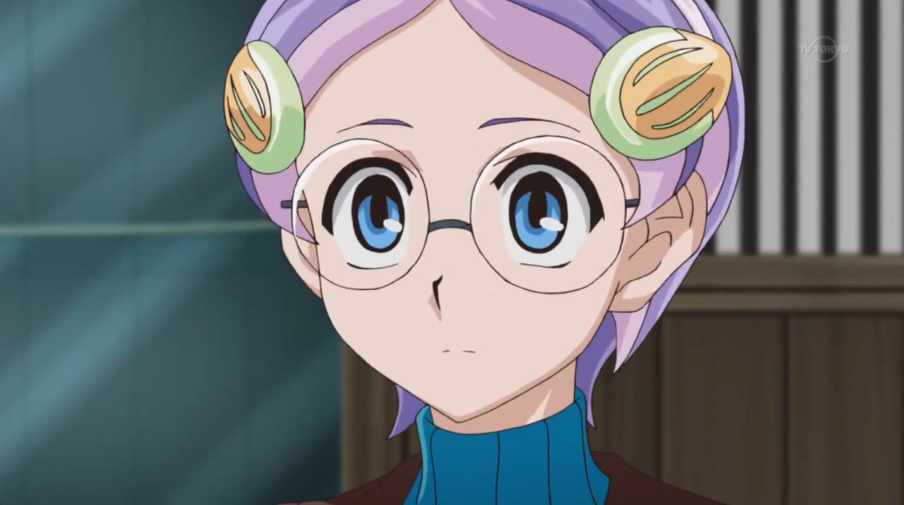
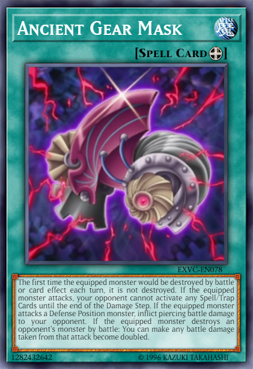
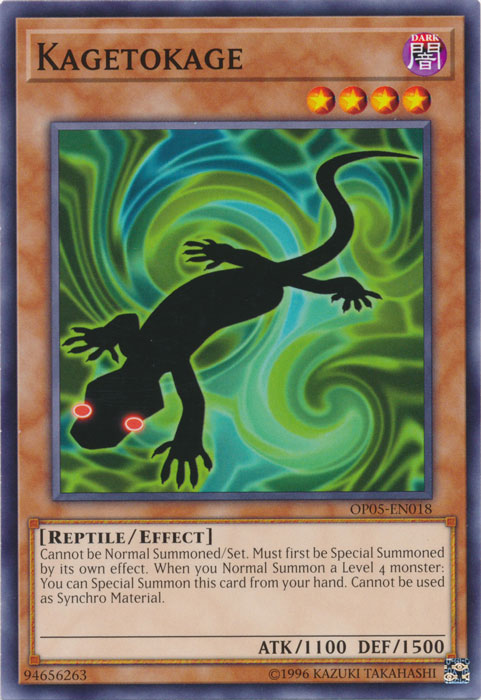
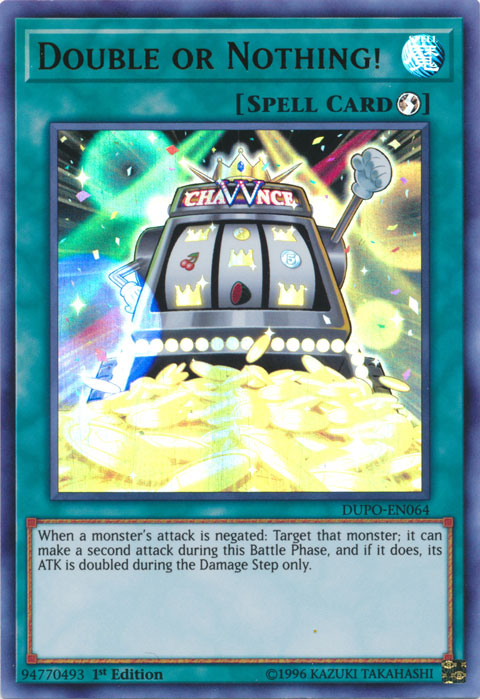

Ruri was tired of running. She had
been on the run for nearly an hour, trying to get away from the cloaked stranger that was chasing her. She had been minding her own business, helping the Resistance,
when suddenly a cold chill ran down her spine. Ruri instinctively turned around to see a disguised figure. Though she couldn't see his face, she could see his smile...
a cold, sadistic smile that told her to get the hell away from him.
Unfortunately, no one else was around when the stranger began pursuing her. Not even her older brother, Shun,
and close friend, Yuto, had been there to
help her out. She was completely alone. It was as if this person knew when to make his move, when she was at her most vulnerable… when no one could help her.
On and on she ran throughout the night in the ruins of Heartland. But no matter where she turned or how fast she moved, the figure was still not far behind. Desperate,
Ruri turned toward a dark alley, hoping to lose him there. To her dismay, it led to a dead end. She was trapped. Ruri turned back around to see the cloaked pursuer
standing before her.
Yuri: What's the matter ? Do you like playing tag ? Please don't make trouble.
The stranger said playfully.
The young girl knew she had one choice left: Fight. When she slipped on her Duel Disk, the stranger seemed amused.
Yuri: So you wanna duke it out ? How unruly. Sure, let's do this. If I win our duel, listen to what I have to say. Alright ?
Ruri stood before that psycho, staring back defiantly at him. She had enough. She was a member of the Resistance; the group of survivors from the Invasion who wanted
to survive and fight back against the ones who destroyed their home and so many of their loved ones. If she was going to fall, she would fall while fighting on her
feet.
The stranger moved to activate his own Duel Disk. He never got to do so, for at that moment...
???: KATTOBINGU !
Yuri: What the... !?
The stranger looked up just in time to see something big fall right on top of him. His vision then darkened and began to have trouble breathing. Someone had jumped on
him and used his own cloak to disorient him.
Ruri stood there, stunned and confused. Before her eyes, a young boy was tackling the man trying to capture her. Tried as he might, he couldn't shake the kid off. The
boy, on the other hand, seemed to be enjoying himself as he tormented his victim.
???: What's the matter, can't breathe under there ? Can't see ? Good ! That's just how I like my bad guys; helpless and totally caught with their pants down!
The boy then tied up the cloak in some complicated looking knots and kicked the figure into a pile of debris. The kid looked really pleased with himself as he turned
towards Ruri.
???: You okay ?
Ruri took a moment to regain her composure as she answered.
Chapitre 1: A ray of hope in a ruined world. A hope named Yuma Tsukumo.
Yuma: My name's Yuma Tsukumo, and I've come to get you out of here... and away from him.
Yuma said, pointing with the thumb of his other hand at the guy still trying to get the knotted cloak off him.
Yuma: So, you ready to run or what, Ruri ?
The girl gasped.
Ruri: How do you know my name ?
She asked, stunned that this Yuma kid knew her name. She was sure she had never met him before. This was the second time a stranger approached her tonight. This time,
though, she could tell this kid meant her no harm. He had just risked his life to save hers after all.
Yuma: I know a heck of a lot more than that, but we can talk later. You coming or not ?
Yuma asked as he held out his hand to her. Ruri looked at his hand, then back at Yuma. Just like her instincts told her to run from the cloaked man, they also told her
to go with this strange young boy. Smiling, she nodded as she took Yuma's hand and together, they ran out of the alley.
Ruri: Where are we going ? The Resistance is the other direction.
Ruri said, noticing they were running in the complete opposite direction of where her comrades were.
Yuma: We are not meeting with the Resistance. We're heading to Heartland Tower. Yuma answered, further surprising Ruri.
Ruri: Why Heartland Tower ? It is not safe there.
She noted. As they ran, Yuma looked at her over his shoulder. He looked much more serious now.
Yuma: Listen Ruri, Academia is after you. That scumbag I just jumped was ordered to take you there as their prisoner. You're not safe here. I've got to get you
away from this place as fast as we can.
Ruri gasped.
Ruri: Academia is after me ! Why !?
She couldn't understand what this was all about. Ever since Academia began their attack, they showed no hesitation in sealing everyone into cards, whether they were
Duelists or unarmed citizens who don't duel at all. Why would Ruri herself be an exception ?
Yuma: I'll explain once we are at a very safe distance from here.
Yuma replied as they kept running. Suddenly, Ruri jerked her hand out of Yuma's grasp and both of them had stopped running.
Yuma: Ruri ? Why have we stopped ? We need to hurry if we are going to get away ! Yuma insisted. Ruri, on the other hand, stared back at him.
Ruri: Tell me why going to Heartland Tower will help us escape. And just where are we escaping too ?
Ruri demanded. This child was telling her she had to leave her home, and all the people she knew. All because she had a big target on her back ? She had a right to know
before she did anything rash. Yuma sighed as he told her.
Yuma: I have a... ship that can fly us away from here and fast ! But see, this ship is like huge, and it can't just land in a place like this. It's best that we head
to someplace really high where we can get to it without any problems...
Ruri: Like Heartland Tower. Ruri said as Yuma nodded.
Yuma: Right. Once we reach the top of the tower, I can contact it to come pick us up. As to where we are going… that's a little more complicated to explain.
He said hesitantly. This made Ruri even more confused.
Why is that ? She asked. Yuma looked stumped, wondering how he should respond to that.
Astral: Yuma, we don't have time for this. We must move now ! Astral insisted. Yuma groaned.
Yuma: I know, but I don't know what to say about where we are taking her ! Tell me what I should say to convince Ruri to leave with us !
He yelled back. Ruri now looked even more confused.
Ruri: Who is Yuma talking to ? There isn't anyone else out here. He also doesn't seem to be using any kind of communication device.
Ruri didn't know what to make of this.
Astral: Just tell her it is a place similar to how her home used to be before the Invasion. It is a much safer location where Academia cannot hope to find her.
Astral suggested. Nodding, Yuma turned back to the baffled Ruri and repeated Astral's words to her.
After a moment of hesitation, she seemed to accept it. She hated leaving her home, even if it was a ghost of its former self. She especially hated leaving her brother and friends behind. Shun, Yuto,
Sayaka, Allen, Kaito
... she would be fleeing to who knows where without any one of them. On the other hand, they would want her to be protected. If Academia was after her for some evil
scheme, they would do what they could to insure her safety. Besides, she didn't believe this to be permanent. She was sure that one day, she would come back to fight
and win the war. Until that day came, her comrades would want her to stay out of their enemy's reach.
Ruri: Okay, I believe you. Let's go. Sighing with relief, Yuma said thanks as they resumed running to their destination.
Meanwhile, Yuto and Shun we're searching frantically for Ruri. She had been missing for over an hour and no one seemed to have seen her at all. They grew more worried
by the minute. Shun especially, since this was his younger sister they were concerned about.
So far, they had found no trace of the dark haired girl. Growing frustrated, Shun punched a nearby wall.
Shun: Dammit ! No sign of Ruri anywhere ! It isn't like her to disappear like this ! Where the hell could she be !?
Yuto shared his anger and worry. He hoped to the heavens that Ruri was alright, somewhere.
Yuto: Shun, we won't give up. We will find her. I'm sure we will.
Yuto said as he held his friend's shoulder. Shun started to grind his teeth with impatience, but he knew Yuto was right. They would never stop looking until they have
found her. He sighed as he tried to calm down.
I hope so, Yuto. I really hope so…
They were about to continue their search when they caught a break.
???: Yuto! Shun! The pair turned to see a younger girl wearing glasses running toward them.
Yuto: Sayaka! What're you doing out here ? You should be back with the others.
Yuto said, concerned that she had left their base on her own like this.
Sayaka: Listen to me ! I… I just saw Ruri ! Not too long ago ! I know where she is !
Surprised at this, Shun instantly grabbed her by the shoulders, staring hard into her eyes.
Shun: You saw Ruri !? Where !? Where did she go !? The older Kurosaki nearly shouted. This scared the younger child.
Yuto: Sayaka, please tell us where Ruri is.
Yuto said much more calmly, though he still sounded urgent. Sayaka nodded after hearing his more steady voice.
Sayaka: I was hiding nearby at the time. I saw her being chased to an alley by some guy wearing a cloak; I couldn't see his face. Whoever he was, he wasn't friendly.
They were about to duel when a boy around my age landed on top of him. He then helped Ruri escape from him. I followed them for a bit and I heard the boy say they
were going to Heartland Tower. After that, I decided to come find you guys.
The young men were stunned by this story.
Yuto: Heartland Tower ? Why there ? Yuto wondered.
Shun: And who is this boy that was with her ? Shun asked, sounding more surprised than angry.
Sayaka: He said his name was Yuma Tsukumo, and he said something about getting Ruri as far away from here as possible. I think...
Sayaka hesitated for a second before continuing.
Sayaka: I think they are both going to leave Heartland. She finished in a fearful tone. This definitely shocked the duo.
Shun: Leave Heartland !? With some unknown child !? Over my dead body ! Shun yelled as he immediately ran toward the direction of Heartland Tower.
Yuto: Shun, wait !
Yuto called, but his ally didn't answer as he kept running. He sighed, knowing nothing would stop the older guy when it came to his sister. He then turned back to Sayaka.
Yuto: Listen, Sayaka. Head back to the Resistance and stay there. Tell only those we can trust what has happened. Shun and I will bring Ruri back. Understand ?
Sayaka nodded once more.
Sayaka: Please, Yuto. Please bring Ruri home.
She said as she started to cry. Yuto then patted her head and gave her an encouraging smile.
Yuto: I promise.
With that, he turned and ran after Shun. Sayaka stared in their direction for a long moment before finally heading back to the Resistance.
After a bit, Yuma and Ruri finally reached Heartland Tower. The boy hated seeing one of his favorite buildings from his home in such a state. But he knew it was their
only chance at getting away.
Ruri: We made it.
Ruri said, hardly believing that they actually got there without meeting anymore Academia soldiers.
Yuma: We're not out of the woods yet. We still need to get to the top. Yuma replied.
???: Sorry, but I can't allow you to leave.
Yuma and Ruri were surprised to see someone come out of Heartland Tower. A tall young man with wild orange hair appeared and stood before them. It was someone the
pair both recognized.
Yuma: Dennis McField !
Yuma shouted in anger. Dennis widened his eyes slightly.
Dennis: Oh ? You know my name ? Well I'm not surprised. I am quite famous for my Entertainment acts around here. Though, I don't believe I know yours.
Yuma grunted.
Yuma: It's Yuma !
He couldn't believe that he was this close to escape with Ruri and Dennis of all people just showed up to roadblock them.
Ruri: How did you know where we would be ? Why won't you let us leave ?
Ruri asked, not expecting to bump into the Entertainer she herself dueled against.
Dennis: I wasn't too far off when I heard you got away from Yuri. I saw you two heading this direction, so I decided to beat you here first.
Ruri: Yuri ? Wait, you mean the guy who tried to capture me ? Ruri asked.
Dennis: Yeah, that would be him. I don't know how you could've escape from him, though. But I'm guessing it had to do with your new friend here ?
Dennis asked as he pointed at Yuma.
Ruri: But how do you know him ? Ruri asked further. She was so confused.
Yuma: He knows Yuri because they work together. Dennis is a spy for Academia. It was Dennis who told Yuri about you in the first place... all on Akaba Leo's orders.
Yuma answered angrily. Ruri and Dennis were both shocked by Yuma's knowledge of the situation. Ruri looked at Dennis in complete disbelief.
Ruri: Is this true ? You're with... Academia ?
Ruri was so shocked by the revelation she was almost speechless. This entertaining man, who seemingly loved to make others smile and laugh, worked with the monster
that tried to capture her ?! She couldn't believe it. Dennis sighed.
Dennis: While I really do like to entertain people, my loyalty ultimately lies with the Professor... and Académia. He replied with a hint of regret. Ruri didn't know what to think.
Ruri: I can't believe it. You tried to have me captured... Ruri was about talk further when Yuma stopped her.
Yuma: He's done way worse than that, Ruri. Yuma added. They both looked at him, wondering what he would reveal next.
Ruri: What else has he done that could be worse ?
Ruri questioned. Yuma turned back to her as he revealed Dennis' worst sin.
Yuma: It was Dennis... who gave Academia the signal to invade your home. Everything that was lost, that was taken from you... was all his fault !
Yuma shouted in outrage, pointing at Dennis.
Dennis was shocked that this kid knew he gave Academia the signal to attack.
Dennis: How the hell did he know it was me !? Only the Professor and those closest to him had that knowledge !
Ruri's reaction was much harder to witness. Tears began to run down her face and her body started shaking. She was looking down as she cried.
Ruri: My home... was destroyed... Nearly everyone... was sealed into cards... So much destruction, so much pain... So much loss...
Ruri then snapped back up to look at the man responsible for all the hell that had befallen her and her loved ones. She looked extremely outraged.
Ruri: HOW COULD YOU !? HOW COULD YOU TAKE AWAY THE HAPPINESS OF A CITY FULL OF INNOCENT PEOPLE !? YOU HAD NO RIGHT TO HURT ANYONE HERE ! NO RIGHT AT ALL !
Ruri then cried more as she covered her face with her hands.
Dennis chose not to reply. He actually hated to see Ruri upset like this. But the Professor had given him a mission, and he had to carry it out. That was all there was
to it. Now he had another task; stopping Ruri from escaping. First he would have to deal with her new friend, who looked more than ready to deliver some serious
payback.
Yuma: Believe me Ruri, Dennis is going to pay for what he's done. And I'll do it... by taking him down in a Duel !
Yuma declared as he activated his Duel Disk.
Yuma: Then after I kick his sorry butt, we're getting out of here.
Dennis seemed slightly amused.
Dennis: You think you can get past me ? It will be entertaining to see you try ! Dennis replied, activating his own Duel Disk.
He then saw a way to keep that little kid occupied for a while.
Dennis: First, I activate
“Mahoseki no Saikutsu ”
By discarding 2 of my cards, I can take one Magic card from my Graveyard and add it to my hand. And today's choice:
“Antique Gear Mask ”
Yuma: Why would he go through the trouble of sending one of his cards to the Graveyard just to get it back right afterwards ?
Yuma wondered out loud. Ruri asked herself the same thing as she watched.
Astral: He must have a had a reason for it. Astral said. He was proven right as Dennis continued.
Dennis: Next, since my
“Entermage Trick Clown ”
was sent to the Graveyard this turn, I can Special Summon it with it's Attack and Defense Points at 0 !
He summoned a clown like Monster on his field.
Dennis: Then I Normal Summon
“Entermage Hat Tricker ”
from my hand.
A Monster that resembled a floating cloak with gloves, glasses, and a hat had popped up next.
Ruri: Now he has two Level 4 Monsters ! That's what his plan was ! Ruri gasped, knowing what would be coming next. Dennis smiled.
A tricky looking Spellcaster in white with a purple cape appeared on the field.
Ruri: That's Dennis' ace ! He's summoned it already ! Ruri exclaimed. Yuma grunted in response to seeing it.
Dennis: Well of course he showed up early ! This a show that requires the main star to pull his main act right off the bat! Next, I equip
“Trapeze Magician ”
with “Antique Gear Mask ”.
The Magician now wore a menacing looking mask, befitting the master that wore a mask himself ever since he arrived in the Xyz Dimension.
Dennis: With this Mask on, my Magician gets a whole lot of new tricks ! You'll see what they are soon enough, Yuma. I then Set 1 card, and end my turn.
Yuma: I got a feeling none of those "tricks" will be good for me.
Astral : Don't be intimidated by his flashiness, Yuma. You have plenty of cards that can shatter through his tricks. You just need to draw a certain card to end
the duel in one move. The sooner you win, the sooner we can escape from here.
Astral advised.
Yuma: Got it...
Yuma whispered low enough so that Dennis couldn't hear him. Just before he could begin his turn, however...
Shun: RURI !
Ruri, Yuma, and Dennis turned to see Yuto and Shun running their way.
Ruri: Nii-san ! Yuto !
Ruri cried out as she hugged them both when they reached her.
Ruri: How did you find me ?
Yuto: Sayaka saw what happened to you and informed us. Yuto answered.
Shun: We then ran here as fast as we could. Are you alright ? Are you hurt ?
Shun asked frantically as he examined his younger sibling for injuries.
Ruri: I'm fine Shun... physically at least.
She said the last part softly. Shun and Yuto could tell that she was upset about something. Before Yuto could ask what was wrong, they noticed the Duel taking place.
Yuto: Hey, you're that Dennis guy that dueled Ruri before. What're you...
Shun then noticed the type of Duel Disk he was using. He and Yuto were shocked.
Shun: That Duel Disk ! Only those Academia bastards have them ! So you're one of them !? You've been working with our enemy this whole time !?
Are you the one who tried to kidnap my sister !?
Shun demanded angrily.
Ruri: No Nii-san. Ruri said, catching her older sibling's attention.
Ruri: It wasn't Dennis who was chasing me before. But he worked with the guy who did. Dennis really is a spy for Academia. Not only that...
She clinched her fists tightly.
Ruri: Dennis was the one who signaled Academia to attack us in the first place.
Yuto and Shun were horrorstruck. They both looked seriously pissed, but Shun's expression was the most terrifying.
Shun: YOU SON OF A BITCH !!!
Shun was ready to tear Dennis apart, but Yuto held him back.
Shun: Dammit, Yuto ! Let me go ! Shun struggled to break free, but Yuto's grip was too strong.
Yuto: Believe me Shun. I want revenge just as a badly as you do. Right now, though, this isn't our fight.
He said sternly as both of them looked at Yuma for the first time.
Yuto: Are you Yuma Tsukumo ? The one that saved Ruri ?
Yuma nodded.
Yuma: Yeah, that's me.
Yuma said. Shun then immediately stared hard at the much younger child, whom flinched out of fear.
Shun: Listen very carefully. You and I are going to have a very serious discussion about my sister later. But now, I want you to make that bastard pay for his
crimes! Do I make myself clear, Yuma Tsukumo ?
Yuma rapidly nodded as he sweated buckets from the look Shun gave him.
With that, Shun backed off to stand with Ruri and Yuto. Ruri knew how angry her brother was and couldn't blame him for wanting to beat Dennis to death. She was glad
Yuto was there to keep him in check. Dennis himself was much more frightened of Ruri's brother than Yuma was.
Dennis: Oh boy. I hope Yuri gets here soon. I really don't want to face that guy's wrath.
But first things first, he had to defeat Yuma and secure Ruri for Yuri's arrival. Yuma then remembered it was his turn and prepared to draw.
Astral: Yuma, forget about Shun and focus on winning this Duel. Astral advised.
Yuma: Got it ! Time for some well deserved justice ! My turn ! Draw !
A Magician in dark blue and orange garb appeared on Yuma's field.
Yuma: Then since I have Normal Summoned a Level 4 Monster this turn, I can Special Summon
“Kagetokage ”
!
Next to the Spellcaster was black lizard with glowing red eyes.
Dennis: So, he's bringing out his own ace right from the start too, huh ?
Dennis said to himself.
Yuma: I now Overlay my Level 4 “Gagaga Magician ”
and “Kagetokage ”
! With these monsters, I build the Overlay Network! ! Xyz Shokan ! Appear, Number 39 ! My battle starts here ! I entrust my wishes upon your white wings ! The Messenger of Light,
“Kibo O Hope ” !
A mighty warrior wearing white and gold armor with a red "39" on it's left shoulder appears in a beam of light, ready to fight it's enemy.
The Xyz trio were impressed by Yuma's new Monster.
Ruri: It looks amazing. Ruri muttered in awe.
Yuto: I agree. Yuto replied.
Shun: Let's see if it can take down Dennis' Monster. Shun said.
Dennis, however, wasn't concerned.
Dennis: Wow ! Now that's a heck of a Monster you got there, Yuma ! But I'm sorry to say, you won't be able to do much with him.
Yuma: Meaning what ?
Dennis: Continuous Trap card open:
“Mado no Toride ”
! When I have a Spellcaster on my field, you can't attack me. So sorry.
Dennis said, halting any chances of Yuma striking at him.
Dennis: Besides, our Monsters have the same Attack Points, so they would both just destroy themselves… or would they ?
He said with a wink. Yuma and the others had the impression Dennis knew something he didn't.
Astral: He must be referring to that Mask he equipped his Magician with. He said it had abilities we haven't seen yet. However...
Astral smiled at Yuma.
Astral: That is something we won't have to worry about.
Yuma: I hear ya. Yuma muttered softly before replying to Dennis.
Yuma: Dennis, you think you stopped me, but you're dead wrong ! I'm gonna break through your defenses and beat you this turn ! He declared.
Yuto: He's going to win the Duel on his first turn ? How ? Yuto asked. He, Ruri, and Shun waited see how the kid would pull it off.
Dennis: Oh ? Then show us what tricks you've got up your sleeve !
Dennis said eagerly. Yuma grinned.
Yuma: Happy too ! First, I activate a card given to me by a friend. It's a Magic card called
“Kishi no Shogo ”
! This lets me change a Spellcaster on the field into a Warrior… like your Monster! And since
“Trapeze Magician ”
isn't a Spellcaster anymore, your Trap can't stop my attacks now !
Yuma declared, surprising everyone.
Dennis: Tch... Dennis grunted in annoyance.
Dennis: Didn't see that coming. He muttered.
Ruri: But it's pointless now. Even if Yuma can attack, both Monsters still have the same Attack Power. They will just destroy each other.
Ruri pointed out.
Yuto: I think Yuma has that covered somehow.
Yuma: Next I equip
“Hope ”
with the equip spell: “Ultimate Hope Ken ”
! This raises “Hope ”
's Attack Points by 800.
Dennis: What did you say !?
Dennis shouted in disbelief as “Hope ”'s Attack Points rose above his Monster's.
(Kibo O Hope: 2500 + 800 = 3300 ATK)
Yuma: Battle ! I attack
“Trapeze Magician ”
with “Kibo O Hope ” !
Yuma's Monster then flew straight at Dennis' Monster.
Dennis: Dammit. At the very least, I'll take some damage, but not lose my Monster due to my Mask's effect and the Duel.
Dennis thought as the battle took place. The others thought the same thing, until…
Yuma: I activate “Hope ”
's Monster Effect ! When a Monster attacks, by detaching one Overlay Unit, I can negate that attack ! Moon Barrier !
Everyone here (except Yuma and Astral) stared in shock as Hope stopped it's blade just an inch from Trapeze Magician's head.
Shun: What the hell is Yuma doing ? Why did he stop his attack !? He could've destroyed Dennis' Monster without any worry of a counterattack !
Shun said in disbelief, not knowing about
“Antique Gear Mask ”.
Yuto and Ruri couldn't understand either as they continued observing.
Dennis: What's the deal, Yuma ? I thought you planned to beat me this turn ?
Dennis stated in a mocking say. Yuma grinned confidently.
Yuma: I am. Now comes the best part! I activate the Quick-Play Magic card,
“Double Up Chance ”
! When a Monster's attack is negated, I can have that same Monster attack again… with it's Attack Points doubled !
Dennis: Dou...Doubled !!? Dennis panicked as Hope's already raised Attack Power rose even higher.
(Kibo O Hope: 3300 x 2 = 6600 ATK)
It didn't matter now if his Monster could not be destroyed this turn; the damage from the attack would finish him.
Ruri: An Attack Power of 6600 ! That means if Yuma's attack succeeds... Ruri started.
Yuto: Dennis will take 4100 points of Damage, enough to beat him with one strike ! Yuto finished.
Shun: He really did know what he was doing.
Shun said quietly, starting to admire Yuma's dueling skills.
Yuma: Alright Dennis, this is for all the people of Heartland that you've hurt !
“Kibo O Hope ”
attack “Entermage Trapeze Magician ”
one more time ! ULTIMATE HOPE KEN SLASH !
Dennis could only stand and watch as his Monster was slashed. The impact sent Dennis flying into the Tower wall hard and he slid down to the ground in defeat.
Dennis: AAAARRRRGGGGHHHH !!!!
Dennis: 4000 LP - 4100 LP = 0 LP
Ruri: Yuma did it ! Ruri cheered.
Yuto: He's strong. Probably as strong as anyone in the Resistance. Yuto said thoughtfully.
Shun didn't say a word, but instead marched right past Yuma and picked up Dennis by the collar. The look he gave made Dennis wish he was anywhere else right then.
Shun: Tell me, Fusion Spy. What does Academia want with Ruri ? Why is my sister so special to this Professor of yours that she couldn't afford to be sealed in a card ?
Shun interrogated. Dennis struggled to be released, but he was trapped in Shun's vice like grip.
Dennis: I don't know.
Shun's grip tightened, making it harder for Dennis to breath.
Shun: Liar ! Tell me, or I'll seal you in a card myself ! He threatened, shocking Ruri, Yuto, Yuma, and Astral. Dennis started to choke.
Dennis: I swear, I really don't know ! I was ordered to find a girl here with a bracelet matching the one your sister wears. After that, I told Yuri to take her to
the Professor. That's it ! The Professor never explained why we had to look for her in the first place ! That's all I know !
After a moment, Shun finally loosened his hold on Dennis… before punching him in the face hard enough to knock him out cold.
Astral: Shun Kurosaki is quite an intense individual. Astral said with interest.
Yuma: I'll say. Yuma replied, still intimidated by the guy.
Ruri and Yuto approach Shun.
Ruri: Nii-san, you weren't really going to seal him into a card if he didn't cooperate, were you ?
Ruri asked, fearful of her brother's actions.
Shun: He confessed that he really didn't know anything. There was no need. He said. This answer did not please Ruri.
Ruri: That's not what I asked ! What you threatened to do was wrong, and you know it Shun ! If you went through with it, you would be no different than the people
who destroyed our lives !
Ruri scolded. Shun sighed.
The truth was, he really did intend to seal Dennis, whether he knew anything or not. The only reason he hadn't was because he didn't want Ruri to witness this horrible
act from her own brother. Also, Yuto would definitely have stepped in, making the situation even more complicated.
Shun: You're right. I'm sorry Ruri. It won't happen again.
This seemed to please his sister. Now with that matter done, Shun focused his attention on his sister's "savior". Once more, he stared down at Yuma with fierce eyes.
Shun: Now, time for that discussion, Yuma.
Shun started, making Yuma sweat again, and gulping.
Shun: Sayaka said you plan to take Ruri away from her home and all her comrades... including me. Is this true ?
Despite how scared out of his pants he was, Yuma didn't look away from Shun.
Yuma: Yes, that's right. I'm taking her to a place where Academia will never find her. It's for her own safety.
Shun: And that makes you different from Academia how ? Why should I believe you ? You could be yet another spy for all we know.
Shun said suspiciously. Yuma looked offended.
Yuma: I'm no spy ! What the Professor plans to do to Ruri is horrible ! That's why I'm saving her from him !
This widened Shun and Yuto's eyes.
Yuto: You know why the Professor wants Ruri ? Yuto asked. Yuma nodded at him.
Shun: Then tell us ! Why does he want her so badly ?
Shun insisted. Yuma didn't get to answer that question.
???: It doesn't matter, does it ? You will all be carded anyway, aside from Ruri that is.
Said a cold, menacing voice.
Everyone looked behind them to see none other than Ruri's pursuer, Yuri. His cloak was gone, so now everyone could see his face, which shocked all but Yuma.
Shun: What the hell !? Shun exclaimed, not believing what he was seeing.
Ruri: His face ! It's the same... Ruri started.
Yuto: As mine ! Yuto finished. Both were near speechless.
Yuri: That's quite enough running, Ruri. Just come with me already. Yuri commanded as he approached.
Ruri: His voice… I recognize it ! He's the one who tried to capture me before ! Ruri revealed
Yuma: Yep, that's Yuri alright. Yuma said, cursing he had caught up with them. He then turned to Ruri and Yuto.
Yuma: Ruri, Yuto, you've both got to come with me now ! It's our only chance ! The trio was surprised yet again.
Shun: What ? Shun said, not believing what he was hearing.
Ruri: You want Yuto to come too ? Ruri asked.
Yuto: I thought only Ruri was going with you ?
Yuma: I never actually said it was just Ruri. Sorry for not mentioning it before. I was just focused on Ruri at the time. Yuto, you've got to come as well. It's
important that you and Ruri stay together ! If you both want to protect each other, then you have to come with me to the top of Heartland Tower now !
Yuma shouted.
Yuto and Ruri stared at each other, not sure what to do. Then another voice snapped them out of it.
Shun: Go with Yuma !
Shun said, now standing between Yuri and his comrades. Yuto and Ruri stared at him.
Ruri: Nii-san ?
Ruri questioned. Without turning to look behind him, Shun conversed with Yuma.
Shun: If Yuto is going as well, then I know Ruri will be alright. I trust him with her safety. Can I trust you to do the same, Yuma Tsukumo ? Shun asked.
Yuma: Absolutely. Besides, it won't be just me. I have friends that can help me watch over them.
Yuma said, trying to reassure the battle hardened Duelist. This seemed to have finally convinced him.
Shun: Then go. I'll buy you time.
He said as he activated his Duel Disk, intending to duel Yuri.
Ruri: Nii-san...
Ruri said, sad that this would be the last time she would be seeing him for a while.
Shun: Don't worry about me, Ruri. As long as you are safe and sound, that is enough for me. Promise me you and Yuto won't leave each other's sides, no matter what.
He said. Ruri and Yuto looked at each other and held hands.
Yuto et Ruri: We promise. Both of them said strongly.
Yuri: How touching. But I must insist you hand her over.
Yuri said as he also activated his Duel Disk.
Shun: You'll have to get by me first, Fusion Scum ! Ruri, Yuto, go now ! Shun commanded.
Yuma: You heard him, let's move ! Yuma said.
With that, Yuma, Ruri, and Yuto finally ran inside Heartland Tower. Up the destroyed structure, they ran up the stairs fast. It was a little troublesome due to all the
damage from the Invasion. At last, they've arrived at the top.
Yuto: Now what ?
Ruri: Yuma said he'll send a signal to some kind of airship that will pick us up. Ruri explained.
Yuma: That's right.
Yuma said as he looked at Astral, who nodded before returning to the inside of the
Emperor's Key.
After that, Yuma raised the Key up in the air. As he did, a beam of golden light shot upwards.
Yuto: What was that ? The signal ? Yuto asked.
Yuma: Yep. Now, you might want to hold onto something. Conseilla Yuma.
The Xyz pair grabbed onto sturdy metal railings. An explosion had occurred above the clouds, which made the tower shake a bit. Fortunately, nothing fell apart. And
then, the clouds above parted to reveal a jaw dropping sight.
A massive, cylinder shaped aircraft descended from above. It then positioned itself just above Heartland Tower, awaiting it's passengers.
Ruri: I heard it was huge, but I never expected it to be THIS huge!
Ruri said in agreement. Just then, a green light had shown down from below the airship and surrounded Yuma, Ruri, and Yuto. From the ground, Shun and Yuri were also
stunned by this latest event.
Shun: What in the world is that thing !? Shun said, shocked by the sight.
Yuri: Beats me, but it looks like some kind of aircraft. Guess I need to finish this Duel quickly. Yuri commented.
Shun: Try it ! Shun replied as they continued their Duel.
Ruri: What's this ? Ruri asked, curious about the light around them.
Yuma: This is how we will be getting aboard. We're ready Astral ! Beam us up !
Yuto et Ruri: Who's Astral ?
Ruri and Yuto both asked. Yuma smiled at them.
Yuma: You'll see.
He said as the light around them turned red right before taking them. With their occupants safely aboard, the Different Dimension Airship flew up again and in a
flash of light… disappeared from view.
 was tired of running. She had
been on the run for nearly an hour, trying to get away from the cloaked stranger that was chasing her. She had been minding her own business, helping the Resistance,
when suddenly a cold chill ran down her spine. Ruri instinctively turned around to see a disguised figure. Though she couldn't see his face, she could see his smile...
a cold, sadistic smile that told her to get the hell away from him.
was tired of running. She had
been on the run for nearly an hour, trying to get away from the cloaked stranger that was chasing her. She had been minding her own business, helping the Resistance,
when suddenly a cold chill ran down her spine. Ruri instinctively turned around to see a disguised figure. Though she couldn't see his face, she could see his smile...
a cold, sadistic smile that told her to get the hell away from him.